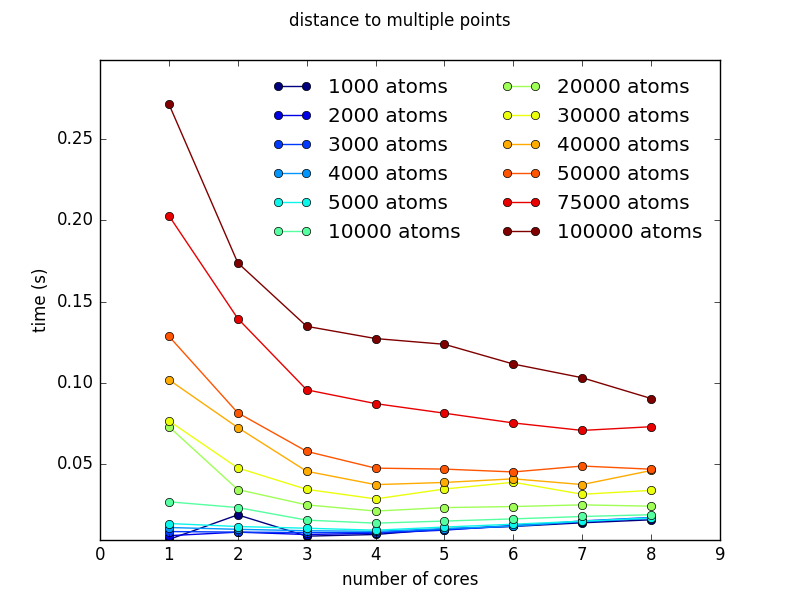
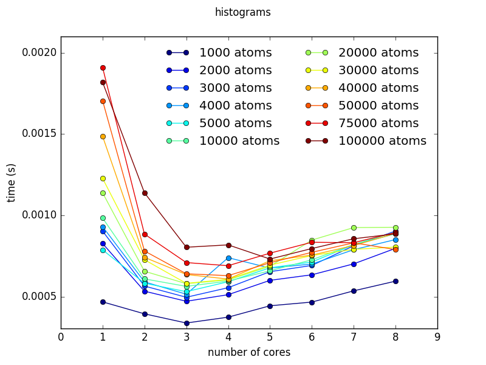
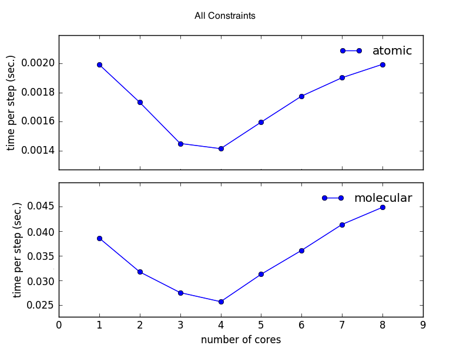

../fullrmc/Examples/multicoreBenchmark/
This example is used to benchmark cores usage multicore fitting performance. It is meaningless to run this example if fullrmc is not compiled with fopenmp flag. Benchmarking is very useful because it allows to judge whether it’s worth it to use multicores when modelling a system of certain size. It is important to know that running fullrmc on multicores doesn’t necessarily means that the fitting time will be a factor times faster. Using multicores doesn’t even guarantee speeding up the time per RMC step. For small systems it is faster to run the simulation on single core because using multiple cores comes with some overhead cost. This Examples has two different run files. ‘run_methods.py’ to benchmark different parallelized methods (figures a and b) and ‘run_simulation.py’ to benchmark a real simulation (figures c). Analyzing the benchmark figures (a,b and c) it is clear that it would be beneficial to use 3 or 4 cores when number of atoms is bigger than 10000. Even though the used machine to do the benchmark has 4 cores, it is preferable to use 3 cores and leave one free for the operating system normal tasks.
 a) pairs_distances_to_multi_points function benchmark using run_methods.py.¶ |
 b) single_pairs_histograms function benchmark using run_methods.py.¶ |
 c) 26065 atoms full simulation benchmark. Comparing atomic an molecular refinement.¶ |
run_methods.py: The script used benchmark different methods used in fullrmc
run_simulation.py: The script used to benchmark number of used cores when fitting a real molecular system
thf.pdb: The tetrahydrofuran simulation box used in run_simulation.py
thf_pdf.exp: The experimental x-rays PDF data used in run_simulation.py
IMPORTING USEFUL DEFINITIONS:
All useful packages, modules and definitions are imported.
USER VARIBLES:
Used to set the benchmark variables. You must change and adapt according to your needs and systems.
CORES: The number of cores list to benchmark
AVERAGE: Every method benchmarked will be ran AVERAGE time
NUMBER_OF_ATOMS: The number of atoms to benchmark reflecting the number of atoms you might be fitting
HISTOGRAMS: Whether to benchmark histograms
PAIRS_DISTANCES: Whether to benchmark pairs distances
ATOMIC_DISTANCES: Whether to benchmark atomic distances
INIT VARIABLES:
Initialize useful variables
HISTOGRAMS:
If HISTOGRAMS is set to True, benchmark single_pairs_histograms method used in different
constraints such as PairDistributionConstraint
PAIRS DISTANCES:
If PAIRS_DISTANCES is set to True, benchmark pairs_distances_to_indexcoords and pairs_distances_to_multi_points method used in different places of the code to compute atomic pair distances
ATOMIC DISTANCES:
If ATOMIC_DISTANCES is set to True, benchmark single_atomic_distances_dists used in
different constraints such as InterMolecularDistanceConstraint
PLOT:
Plot all benchmarks data.
IMPORTING USEFUL DEFINITIONS:
All useful packages, modules and definitions are imported.
SHUT DOWN LOGGING:
Set logger minimum level to maximum possible integer value. This will mute all non-error logging.
USER VARIBLES:
Used to set the benchmark variables. You must change and adapt according to your needs and systems.
CORES: The number of cores list to benchmark
NSTEPS: The number of steps to run the engine
DEFINE run_engine METHOD :
Define the main run method used to do the benchmarking.
RUN BENCHMARK:
Run the different benchmarks
PLOT:
Plot all benchmarks data.
{kind=link}
{kind=link}
{kind=link}